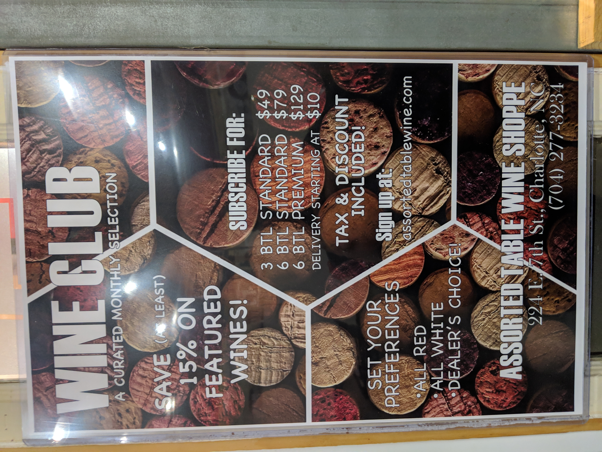

Assorted Table Wine Shoppe
An Uptown Experience


Note: This article was first posted on November 28, 2018 here
Walking into 7th Street Market the place is filled with different food offerings and retail. Towards the back you see a nice selection of wine. This is the Assorted Table Wine Shoppe. We came in on a Tuesday to experience the weekly tasting. When doing the tasting we went up to the register first to purchase the tasting and get your wine glass. Then we sat down at one of the long tables in the area. We were greeted by staff who offered us the first wine explaining to us what grapes it was made from, what area it was from, and more. In addition, there was pizza out with paper plates for those doing the tasting to snack on.

We had a sheet with the name and prices of the wine to follow along as we did the tasting. Our favorites from the tasting were an American Cabernet Sauvignon and a Spanish Priorat. We also got to taste a Beaujolais Rouge which is made from the same grapes as a Beaujolais Nouveau which is commonly called the Thanksgiving wine. It was tasty as well. Throughout the tasting we enjoyed margherita pizza, meat pizza, and veggie pizza. It was nice to have a snack both to cleanse your palate and to tie you over till you have some dinner.

If you want to eat a full meal ZiaPia is right next door with an abundance of Italian offerings. We recommend the Rustichella sandwich made with prosciutto and fresh mozzarella or the fresh pasta of the week. We even saw the ZiaPia staff making some of their fresh pasta. If Italian doesn’t fit the bill there are plenty of other offerings inside 7th Street Market from crepes to sushi and more.
The Assorted Table Wine Shoppe has bottles ranging from around $10 to $100. They also have a scratch and dent section for bottles whose labels aren’t in as nice of shape for a discount. Bottles can be consumed at the wine bar with no corkage fee or taken home to drink later. They also have a wine club. See below for more information.
 Location and hours:Inside 7th St Market | 224 E 7th St
Charlotte, NC 28202
704-277-3234
Mon-Thurs: 11AM-8PM | Fri: 11AM-9PM | Sat: 9:30AM-9PM | Sun: 10AM-5PM
Weekly Events:
- Sundays - $6 Mimosas and Bellinis
- Tuesdays - $5 Wine tasting between 5pm and 7pm where you also get a $5 gift card to the shop and 10% off the bottles you tasted
- Every other Wednesday – Wine and Cheese Class with Orman’s cheese shop (also in 7th st market)
Need to Know:
- By the glass offerings are priced very well starting at only $5. If you are looking for a place in uptown to grab a quick glass of wine or to drink a bit while doing some work this hits the nail on the head.
- In addition, discounts are available when buying wine in larger quantities. When buying 6 bottles you get a 5% discount, for 12 bottles a 10% discount.
- Parking is free in the garage for 90 minutes with ticket validation.
- They offer a wine club with offerings starting at 3 bottles per month for $49 and going up from there. Options are also available for all red, all white, or mixed.